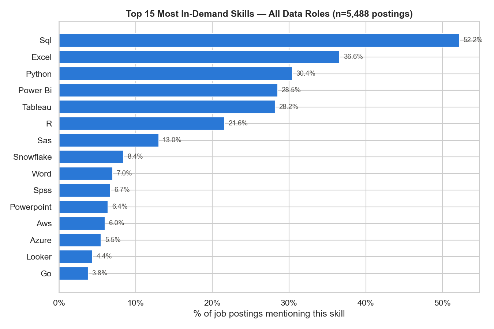
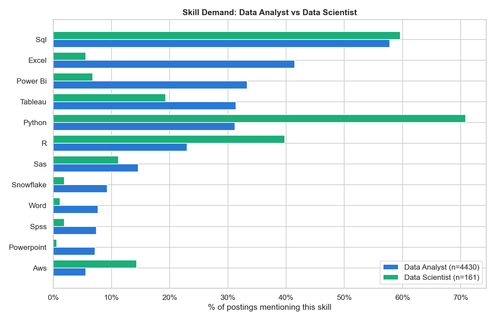
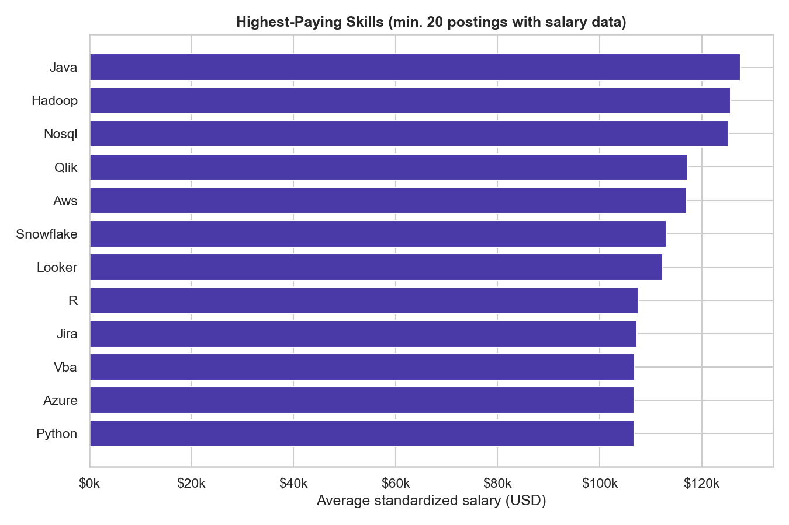

<meta charset="utf-8">
<title>Data Job Market: Skill Demand Analysis — Report</title>
<link rel="stylesheet" href="../../assets/css/style.css">

<header class="hero">
  <div class="wrap">
    <p class="eyebrow">Project 03 · Data Analyst / NLP</p>
    <h1>Data Job Market: Skill Demand Analysis</h1>
    <p class="lede">
      Text-mining 5,488 real US data job postings to find out what employers actually
      ask for — and how Data Analyst and Data Scientist toolkits diverge.
    </p>
    <div class="links">
      <a href="../../index.html">&larr; All projects</a>
      <a href="notebooks/skill_trends.ipynb">Notebook</a>
      <a href="README.md">Project README</a>
      <a href="https://github.com/iweld/data-analyst-job-postings">Dataset source</a>
    </div>
  </div>
</header>

<main class="wrap report">

  <section>
    <h2>The numbers</h2>
    <div class="stat-row">
      <div class="stat"><div class="value">5,488</div><div class="label">Job postings analyzed</div></div>
      <div class="stat"><div class="value">113</div><div class="label">Distinct skills/tools found</div></div>
      <div class="stat"><div class="value badge-good">52.2%</div><div class="label">Postings mentioning SQL</div></div>
      <div class="stat"><div class="value">70.8%</div><div class="label">DS postings mentioning Python</div></div>
    </div>
  </section>

  <section>
    <h2>Why this project</h2>
    <p>
      Most portfolio projects analyze someone else's business problem. This one turns
      the same text-mining approach onto the job search itself — directly useful for
      my own search, and hopefully for other Information Management grads doing the same.
    </p>
    <div class="callout">
      <strong>Scope note:</strong> the underlying data covers two months, US-only
      (Nov–Dec 2022) — this is a skill-demand <em>snapshot</em>, not a multi-year trend
      line, and it's framed that way throughout rather than overclaiming trend data
      the dataset doesn't have.
    </div>
  </section>

  <section>
    <h2>Method</h2>
    <ol>
      <li>Classify each posting's title into <strong>Data Analyst</strong>, <strong>Data Scientist</strong>, or <strong>Hybrid/Other</strong> by keyword match.</li>
      <li>Parse the dataset's pre-extracted <code>description_tokens</code> field and explode into one row per (posting, skill) — 113 distinct skills/tools found.</li>
      <li>Rank overall skill demand, then compare Analyst vs Scientist postings side by side.</li>
      <li>Cross-reference skills against the 18% of postings with a standardized salary figure.</li>
    </ol>
  </section>

  <section>
    <h2>Most in-demand skills, overall</h2>
    <figure>
      
      <figcaption>SQL, Excel, and Python lead — % of all 5,488 postings mentioning each skill.</figcaption>
    </figure>
  </section>

  <section>
    <h2>Data Analyst vs Data Scientist: different toolkits</h2>
    <figure>
      
      <figcaption>Data Analyst (n=4,430) vs Data Scientist (n=161) postings.</figcaption>
    </figure>
    <table>
      <thead><tr><th>Skill</th><th>Data Analyst</th><th>Data Scientist</th></tr></thead>
      <tbody>
        <tr><td>SQL</td><td>57.8%</td><td>59.6%</td></tr>
        <tr><td>Excel</td><td>41.5%</td><td>5.6%</td></tr>
        <tr><td>Power BI</td><td>33.3%</td><td>6.8%</td></tr>
        <tr><td>Tableau</td><td>31.4%</td><td>19.3%</td></tr>
        <tr><td>Python</td><td>31.2%</td><td class="badge-good">70.8%</td></tr>
        <tr><td>R</td><td>23.0%</td><td class="badge-good">39.8%</td></tr>
        <tr><td>AWS</td><td>5.6%</td><td>14.3%</td></tr>
      </tbody>
    </table>
    <p>
      SQL is table stakes for both roles at nearly identical rates. Everything else
      diverges sharply: Analyst postings lean on Excel/Power BI/Tableau (reporting &amp;
      BI tooling), while Scientist postings lean hard on Python and R (modeling
      tooling) and skew more toward cloud (AWS).
    </p>
  </section>

  <section>
    <h2>Skills and salary</h2>
    <figure>
      
      <figcaption>Highest-paying skills, minimum 20 postings with salary data (18% of postings include salary).</figcaption>
    </figure>
    <p>
      Skills tied to higher average posted salary skew toward specialized / production /
      data-engineering-adjacent tooling (Java, Hadoop, NoSQL, AWS, Snowflake) rather than
      general-purpose spreadsheet or BI tools.
    </p>
  </section>

  <section>
    <h2>Caveats</h2>
    <ul>
      <li><code>description_tokens</code> is pre-extracted by the source dataset, not NLP'd from raw text by me — a couple of entries (e.g. "Go") may include false positives from common English words rather than the Golang language.</li>
      <li>Salary data covers only 18% of postings and isn't randomly distributed (larger/more transparent employers post salary more often) — directional, not a rigorous causal estimate.</li>
      <li>Nov–Dec 2022, US-only — not necessarily representative of the current or non-US (e.g. Taiwan) market.</li>
    </ul>
  </section>

  <section>
    <h2>Takeaways for my own job search</h2>
    <ul>
      <li>SQL and Excel are genuinely table-stakes for Data Analyst roles — worth being rock-solid rather than "familiar with."</li>
      <li>Python + stats/ML tooling is the clearest Analyst → Scientist differentiator, which is why <a href="../01-retail-customer-analytics/report.html">Project 1</a> and <a href="../02-churn-prediction/report.html">Project 2</a> in this portfolio deliberately cover both sides of that line.</li>
      <li>Cloud/warehouse tools (AWS, Snowflake) show up often enough — and correlate with higher posted salary — to be worth passing familiarity even in an entry-level search.</li>
    </ul>
  </section>

  <section>
    <h2>Skills demonstrated</h2>
    <div class="tags">
      <span class="tag">Text Mining</span>
      <span class="tag">pandas</span>
      <span class="tag">Comparative Analysis</span>
      <span class="tag">Market Research</span>
    </div>
  </section>

</main>

<footer>
  <div class="wrap">
    Data source: <a href="https://github.com/iweld/data-analyst-job-postings">gsearch_jobs_2022 dataset</a>.
    Full code in the <a href="notebooks/skill_trends.ipynb">notebook</a>.
  </div>
</footer>
